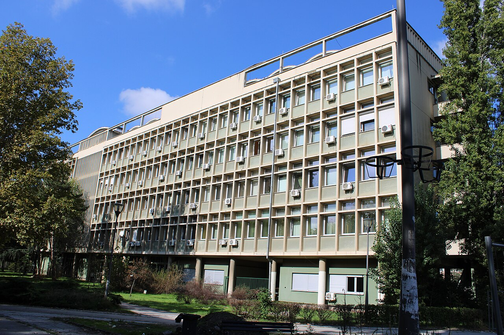
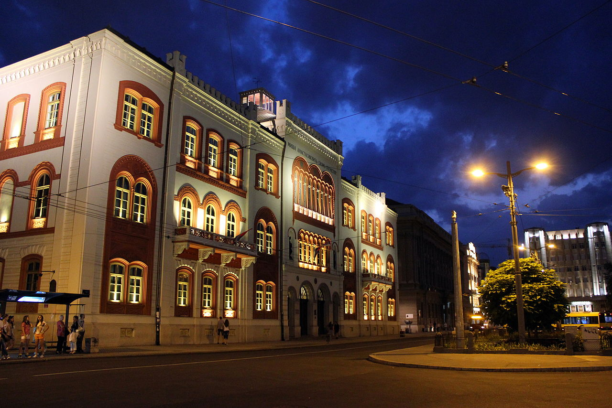

Univerzitet u Beogradu i Poljoprivredni fakultet Univerziteta u Novom Sadu organizuju skup Dani otvorene nauke VI. Cilj skupa je upoznavanje naučne zajednice sa principima otvorene nauke i aktuelnim inicijativama i zahtevima u ovoj oblasti, posebno u kontekstu projekata finansiranih od strane Fonda za nauku Republike Srbije i Evropske komisije.
Kotizacije nema i svi su dobrodošli, ali je registracija obavezna. Link za registraciju je dostupan OVDE.
Dani otvorene nauke VI će se ove godine održati u dva grada. Na Poljoprivrednom fakultetu
Univerziteta u Novom Sadu (Trg Dositeja Obradovića 8, Novi Sad) 24. novembra 2026. godine i u svečanoj sali Rektorata Univerziteta u Beogradu (Studentski trg 1,
Beograd) 25. novembra 2026. godine. Informacije o Danu otvorene nauke VI, uključujući i preliminarnu agendu, dostupne su na sajtu Nacionalnog portala otvorene nauke
u Srbiji: https://open.ac.rs/novosti/konferencije/don2026/.
 